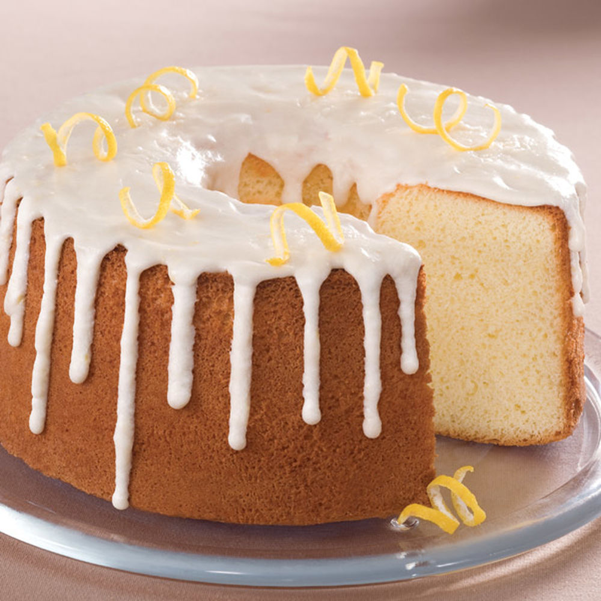

In a large bowl, sift together the flour, baking powder, salt and sugar. Make a well in the center and pour in the milk, egg and melted butter; mix until smooth.
Heat a lightly oiled griddle or frying pan over medium high heat. Pour or scoop the batter onto the griddle, using approximately 1/4 cup for each pancake. Brown on both sides and serve hot.
Orange Chiffon Cakes

Ingredients
2 cups all-purpose flour
4 teaspoons baking powder
1/2 teaspoon salt
1 1/2 cups sugar, divided
1/2 cup neutral-tasting oil, such as safflower
6 large eggs, separated
2 tablespoons finely grated orange zest and 1/2 cup fresh orange juice (from 2 to 3 navel or Valencia oranges)
1/4 cup cold water
1/4 teaspoon cream of tartar
Whipped cream, for serving
Candied Orange Zest, for serving (optional)
Procedure
Preheat oven to 325 degrees. In a large bowl, whisk together flour, baking powder, salt, and 1 cup sugar. Make a well in center of flour mixture. Add oil, egg yolks, orange zest and juice, and 1/4 cup cold water; whisk batter until smooth.
With an electric mixer on medium-high speed, whisk egg whites and cream of tartar until soft peaks form. Gradually add the remaining 1/2 cup sugar, 1 tablespoon at a time; continue to beat until stiff peaks form. Using a flexible spatula, gently fold half of egg-white mixture into batter. Fold in remaining egg-white mixture just until combined (do not overmix).
Pour batter into a 10-inch footed angel food cake pan with a removable bottom; bake until a cake tester inserted near center of cake comes out clean, 55 to 60 minutes. Remove from oven; invert, still in pan, onto a baking sheet. Let cool completely. Run a sharp knife around edges to release cake. Serve topped with whipped cream and candied zest, if desired.
Apple Pie
Ingredients
1 recipe pastry for a 9 inch double crust pie
3 1/2 cup unsalted butter
3 tablespoons all-purpose flour
1/4 cup water
1/2 cup white sugar
1/2 cup packed brown sugar
8 Granny Smith apples - peeled, cored and sliced
Procedure
Preheat oven to 425 degrees F (220 degrees C). Melt the butter in a saucepan. Stir in flour to form a paste. Add water, white sugar and brown sugar, and bring to a boil. Reduce temperature and let simmer.
Place the bottom crust in your pan. Fill with apples, mounded slightly. Cover with a lattice work crust. Gently pour the sugar and butter liquid over the crust. Pour slowly so that it does not run off.
Bake 15 minutes in the preheated oven. Reduce the temperature to 350 degrees F (175 degrees C). Continue baking for 35 to 45 minutes, until apples are soft.